Visible Alpha Watchlist
Combined case study for the Visible Alpha Watchlist redesign.
What I have done
Defined Product Attributes, Prioritized Features, Planned Features Roadmap, Grouped Features into Workflows, Designed Low & High Fidelity Prototypes
What I delivered
Product Mission, Product Features, Roadmap Design, Features Worksheets, Workflows, Low Fidelity Wireframes, High Fidelity Prototypes, Deliverables
Platform
Visible Alpha
1. Background
A watchlist consisting of selected companies is the fundamental information unit for financial professionals in their day-to-day work efforts, used to monitor stock market trends, predict investment benefits, and compare interest returns. Each financial service platform provides similar functionalities for their watchlists. A critical challenge for all software vendors, however is how to efficiently manage the lists.
Watchlist, a product available on Visible Alpha's platform, has been available for clients use for the past two years. During this time, feedback was gathered from our clients, financial professionals working for investment houses, hedge funds and other financially-based firms. It was identified that the inefficiency of managing workflows blocked our clients from using downstream applications such as the e-newsletter setting application. To encourage greater use of Watchlist and fill the gap between Watchlist and downstream applications, the execution team made two decisions: to redesign Watchlist and to reconsider its position within our product line.
I organized and hosted a product design workshop with the Product Manager as well as representatives from marketing, development, and support teams to clarify the product's mission, summarize users' archetypes, analyze requirements, and brainstorm features. After we balanced these features into three stages, we made a short-term, mid-term, and long-term plan.
2. Product Strategy and Roadmap
Identification of the issues and challenges associated with the product, both large and small, was necessary. A series of meetings were held with the Product Manager (PM) to gather information on perceived issues. During the first meeting with the PM, she delivered extensive detail and messages to me based on the feedback she collected during the two years in which the product was live. Her notes included:
- observations from user training sessions,
- bug reports from the support team,
- new expectations about desired features from users' email, and
- product opinions from the CEO.
The PM asked, based on my experience, for a plan to move forward. Specifically, she wanted direction about how to manage the coming sprints?
Although a great deal of information came to me at once, I determined that there was a critical need to define the scope of the project before moving forward. By studying all of the inputs and the product itself, I determined that there were two problems to be solved in this project. The first issue was the unfriendly workflows to create and manage watchlists, and the second one was the disconnect between Watchlist and downstream applications.
Due to the hectic and complicated work schedules of our primary end-users (financial professionals), there was no opportunity to speak directly with clients for their direct feedback on needs and issues related to Watchlist. Thus, as the first step, I studied the database to learn user behavior. Next, I facilitated a workshop with the established team for the product redevelopment. This group included the PM, Marketing Specialists, members of the Development Team, members of the Client Support Team and me. The workshop focused on defining the product mission, followed by developing users' portraits and prioritizing the features related to Watchlist. The last step was for me to create a product plan that included short-term, mid-term ,and long-term goals to capture the prioritized features.
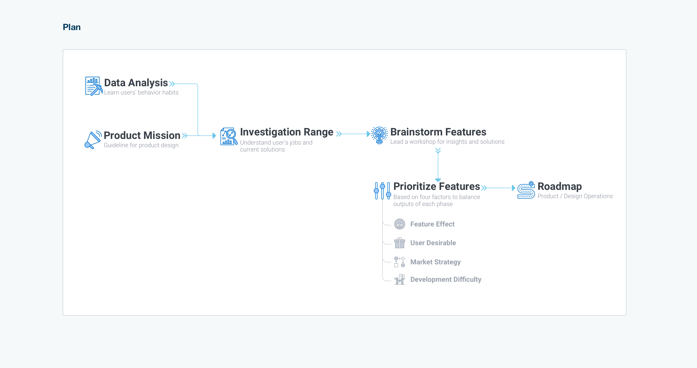
I thought it was important to understand behavior patterns of the end-users from three perspectives. First, how many watchlists did active users maintain at any given time? When did they create them? Second, how many companies did they include in one watchlist? What attributes did these companies share? Third, how did our clients name their watchlist(s)? Did the names indicate any information about how they use their watchlists?
Some of the facts identified include:
1. Over 70% of our active users had at least one watchlist on the platform.
2. 50% of users created their first watchlist during the onboarding session. 20% of users waited approximately two weeks to return to the platform to create their first watchlist. Nearly all of the remaining 30% created their first watchlist within two months of creating their accounts.
3. Approximately 50% of end-users named their watchlists with ordinal numbers, the creation date, or combination of both to name. The remaining 50% of people named their watchlist according to a specific function, such as 'S&P 500'.

I was inspired by a 2C website buildup framework (designed by Chris Do) that talks about the method for putting features onto commercial websites. Based on my knowledge, the first critical step is to define the product. It is vital to understand the needs and requirements of the users – both what the requirements are and why they have such requirements. By understanding these factors, a clearer direction for the redesigned product would become visible. Thus, during the aforementioned workshop, I led participants to use adjectives to answer all the following questions:
- How would we describe our users?
- How do we sound to the clients?
- How do they feel when using this product?
- What do they feel after using this product?
- What makes our product special?
Based on all of the words listed, we selected three answers for each of the questions, then decided on one to be included in the final version. Finally, I put the words together to write a sentence that represents our product.
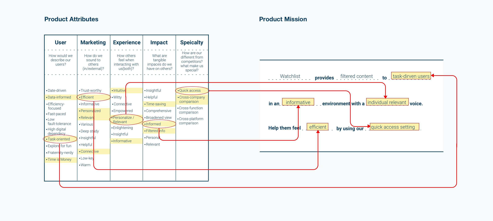
We conducted an analysis of our users' archetypes and roles within financial firms. Based on these roles, we listed how they process industry data and content every day. How did Watchlist help or benefit them? Moreover, which tasks did our product leave unsupported for them?
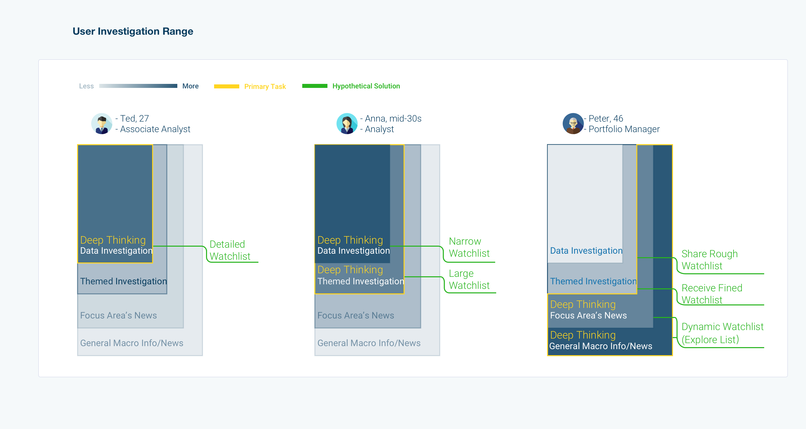
Based on the answers provided in the previous step, we brainstormed both solutions and features. After listing all of them, we measured them against four factors, marketing term, users' desirable, effect of features, and development difficulty. We divided the marketing term into short, middle, and long-term. Feature effect was divided into basic effects, performance improvement, and delighted effect. Users' desirable and development difficulty were each rated from 1 to 10.
During this step, we needed to separate vaguely described features into specific sub-features. As an example, 'create a watchlist on the homepage' is a vague feature. We need to clarify where and how. In this version, Watchlist had companies grouped into one watchlist, which was identified as a basic feature in the short-term.
As an enhancement, we proposed a watchlist based on filters, such as hotel industry companies. We called it an 'explore list'. To create one filter for the explore list is a basic feature in the mid-term. Further, to create filter combinations was a delighted feature in the long-term, such as the top 20 hotel companies plus Airbnb. To ensure the benefits of these innovation features, we needed to conduct testing after the first term.
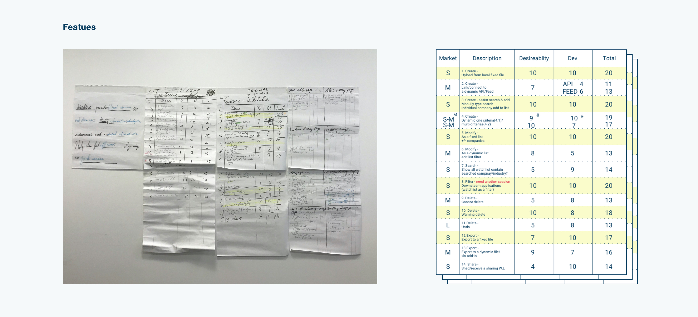
We put all these features into three terms and then balanced the number of users' desirable rating and development difficulty rating. We wanted the numbers to decrease linearly. I proposed that by the end of each phase I would facilitate user testing. Room would be needed for iterations and modifications. Finally, we balanced the number of basic, improving performance, and delighted features. For this component of the effort, the total number decreased linearly as well.
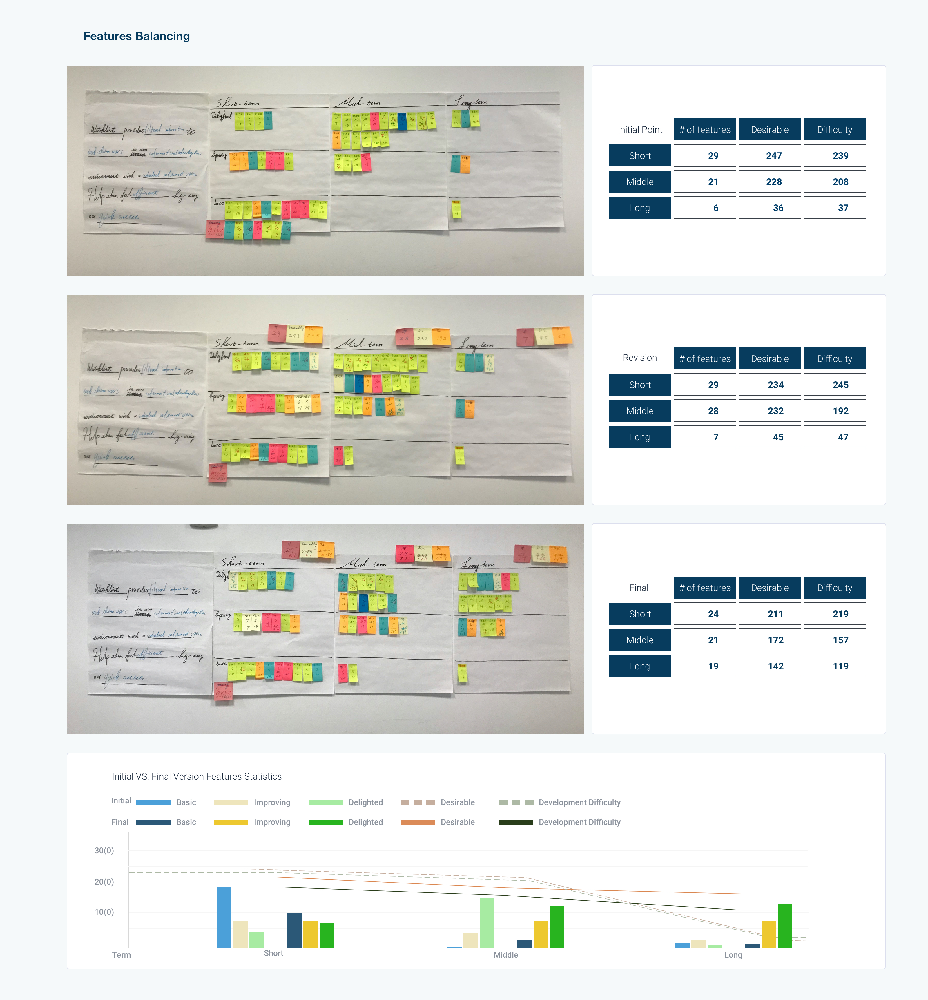
In the end, we arrived at a roadmap possessing three terms. The short-term started with fundamental features that could be implemented right away for the next sprint. Mid-term changes would begin in three to six months, followed by user testing to iterate the short-term design. For the long-term plan, we would focus on more innovative design features. This would be for changes to be developed in approximately one year.
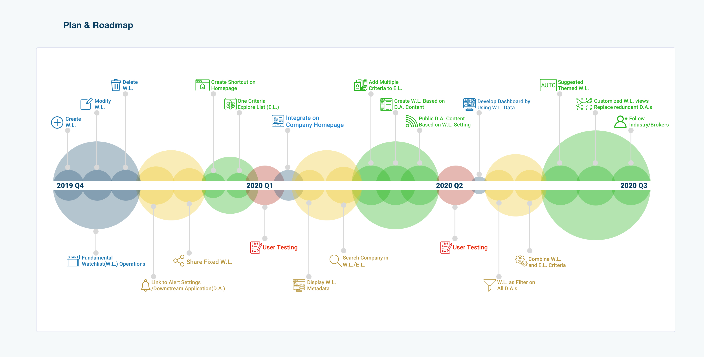
3. Workflow Design and Prototyping
The short-term goals were to be addressed and redesigned within three months, including the above research phase. The time constraints imposed were the most challenging part of the project for me. During the allotted time, twenty-four features needed to be designed and configured into nine workflows for Watchlist. All of the features focused on how to manage Watchlist in the most user-friendly and efficient manner possible. Further, they encouraged users to use downstream applications via Watchlist. Ultimately, I succeeded in designing nine workflows within the three-month deadline with high fidelity prototypes for the engineering team to develop.
To create features for high fidelity prototypes, I followed the following steps:
1. Grouping the features by their operations and start/endpoint into workflow drafts. Examples include the watchlist creation process on the homepage or the deletion of a watchlist on the maintenance page.
2. Planning workflows and added missing features to make the workflow complete.
3. Sketching low fidelity pages and linked them together for a user testing session.
4. Designing high fidelity prototypes followed by a second user testing session.
5. Updating the design before delivering it to the programmers.
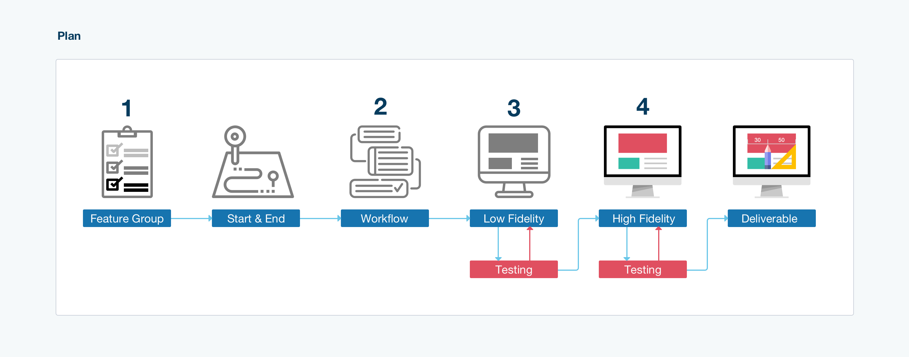
All features were placed into users' operation groups. The operations included:
- creation
- deletion
- search
- display
- modification
- share
Once this was done, I listed the start point and endpoint.

Some workflows shared the same start point and endpoint. This was one of the two reasons that convinced me to combine them into one workflow. Once merged, each of them would serve as a branch of the new one. An example of this is having two methods to create a watchlist on the homepage.
The second reason I chose to combine them into one workflow was from the product perspective. Before the workshop, I studied our user data and learned that nearly 70% of our users uploaded a file to create a watchlist. The Product Manager suggested another for developing a watchlist. With the 'Search & Add' method, the program suggests companies based on recently viewed criteria. Compared to uploading a file, Search & Add was more efficient and accurate for users to create a watchlist. My goal was to give these users an opportunity to use this method.

At this stage, the main task was to design the number of steps to finish one workflow. Users could complete the workflow in one window or multiple windows, depending on the complexity of the workflow. One window refers to a page or a modal. For the creation of the new workflow, I balanced the number of actions and how much information users needed to process for each operation. Thus, I designed three steps for creating a watchlist. First, users chose which way to create a watchlist. Next, users either uploaded a company list file or searched the companies they had interests in and added them to the list. Finally, users could select e-newsletter settings.
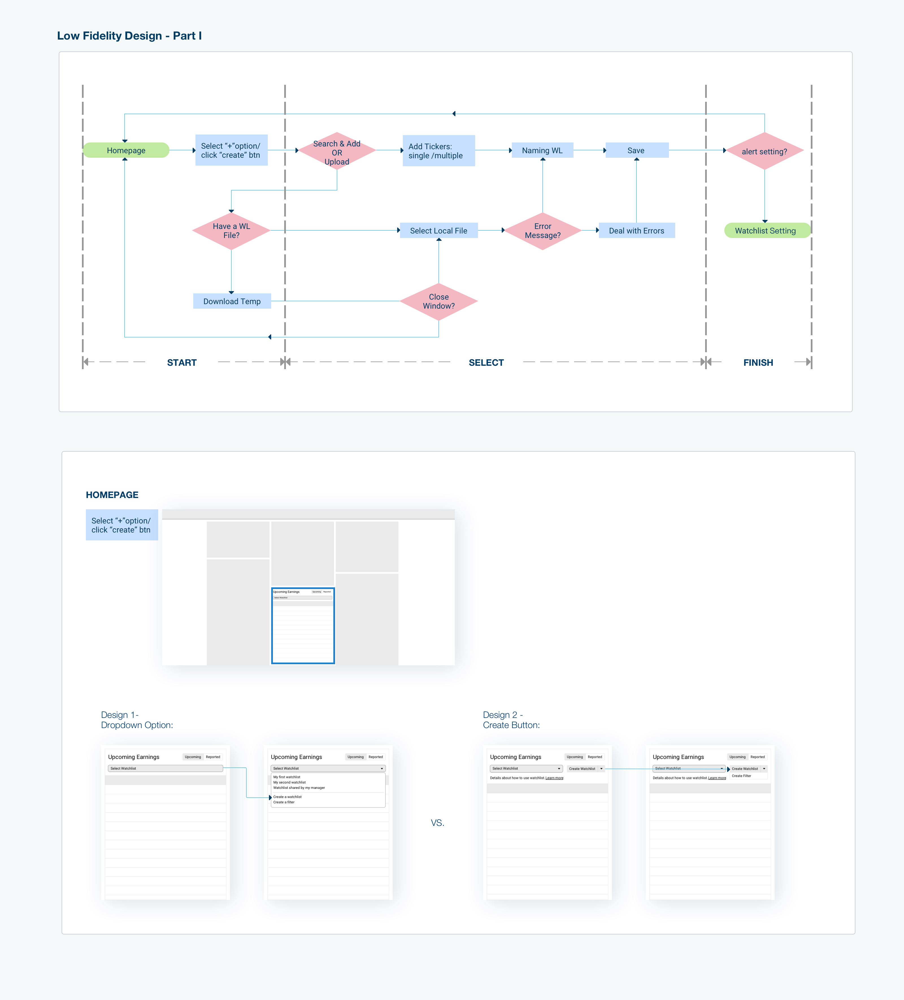
In this step, it was critical to ensure the workflow was complete. In order to help users achieve their goals, they had to have enough information to place in a named watchlist.
The second key was usability. To ensure a smooth workflow, I followed similar layouts and a visually consistent flow to lead users toward finishing the task. Typically I design at least two versions to compare and determine the more efficient and user-friendly version. Since this was a prototype, it was necessary to check whether users face any obstacles while finishing any given task. Therefore, user testing was conducted to help me improve usability.
The third key was efficiency. Here, I used the results from my earlier user data-mining research. To help users more quickly and efficiently create a watchlist on the platform, I designed a completely new feature for Watchlist. This feature involved offering default companies based on this user's recently viewed companies. The goal of the new feature was to help users create a new watchlist easily and quickly. Prior to this feature addition, users had to search each company separately. Based on my prior study of over 10.000 records, the average size of a watchlist is 28, and I rounded to 30. So thirty of most recently viewed companies became the suggested companies deployed for this feature.
Another feature for efficiency was suggesting a watchlist name. Suggested names were included in the program based on the most typical naming pattern identified (an ordinal number and today's date). 80% of users' scenarios were covered with these default options. For the remaining 20%, we planned to add metadata tags for each of the companies. Based on these tags of all companies in a watchlist, we designed a naming rule, which is in the long-term plan, to suggest a file name to users.
After applying these new features, users only used three mouse clicks to create a new watchlist for most cases.
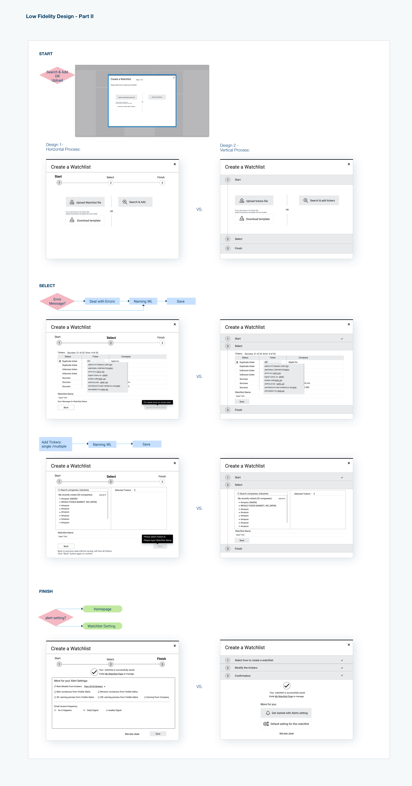
The goal for high fidelity design was readability. The goal for the high fidelity design was its readability. I applied the design system and UI library content to my low fidelity design, then went ahead with the high fidelity design. Since Visible Alpha was in the midst of a UI refresh project, I selected the data table for my redesign part. One reason is that the current one had obstacles for users to understand the workflow. The new design helped them to understand the workflow easily. Another one was the new design was easy to implement after I discussed it with the development team.
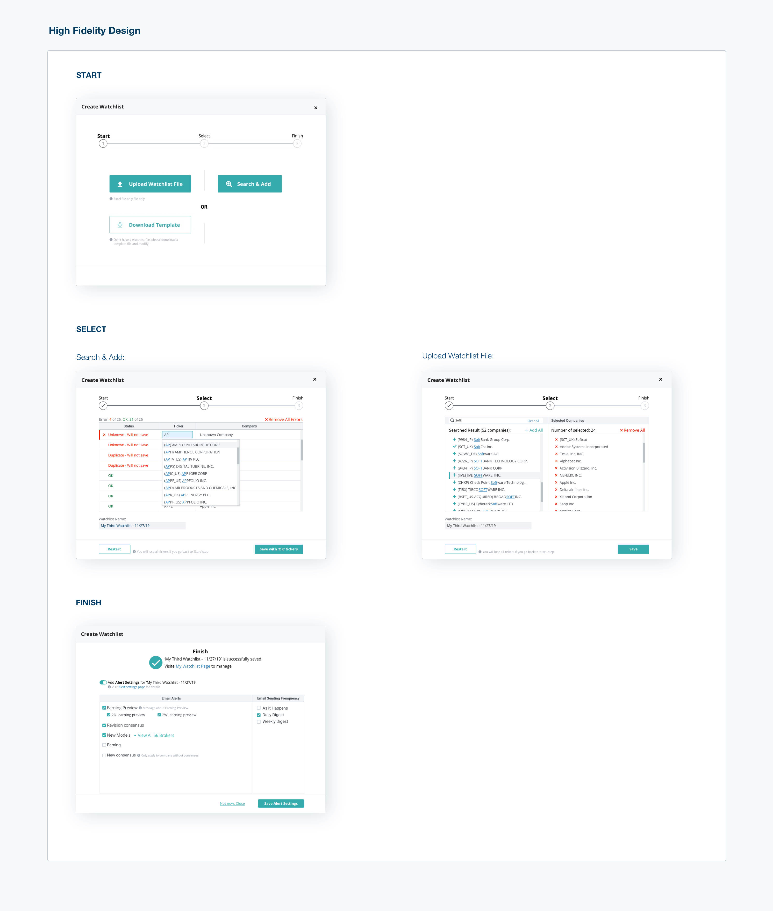
4. Testing and Deliverables
I planned and facilitated usability testing for the watchlist creation process. The testing was done internally by employing four newly hired employees from the marketing and product teams. While not familiar with Watchlist, each of the testers had a financial background and was able to finish the required tasks without assistance or hints. I used their feedback to improve my design before finalizing it.
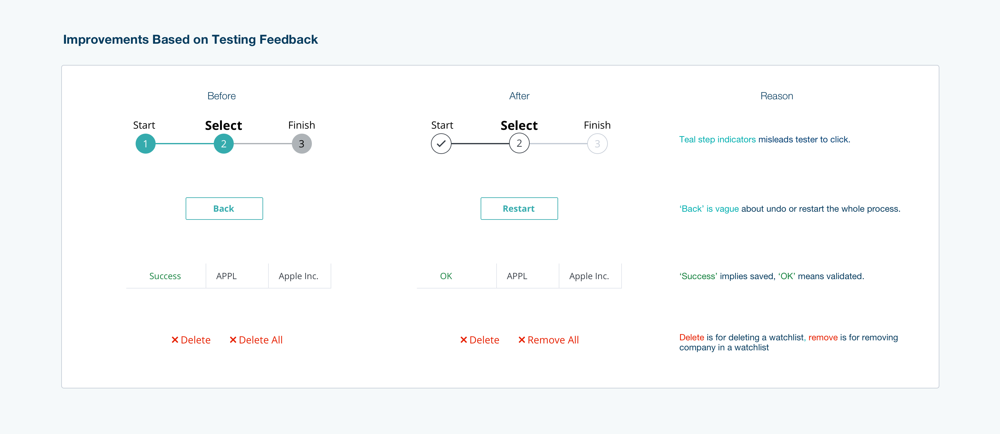
I created an inVision prototype for the developers to navigate the workflows I designed. However, inVision does not provide a workflow-level map. This meant the developers would not have the full picture of the needs. To ensure the developers had all of the information needed to create the product as designed successfully, I drew a navigation chart and integrated it into the prototype. For the details, I exported the Sketch files to Zipline. The developers were then provided with all of this information from which they could begin.
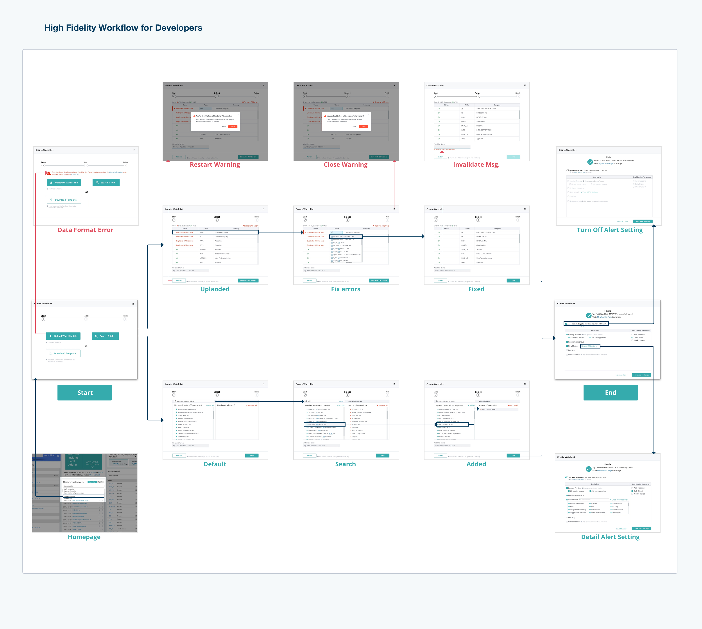
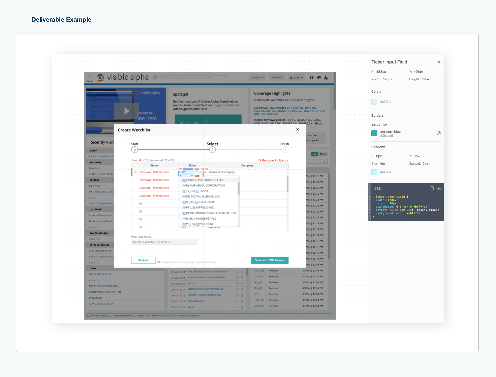
5. Takeaway
Hosting a task-orientated workshop with team members representing the various departments aligns each team to the goal of the product based on users' needs. It is to set up a communicative method for teams to collaborate.
The proper framework helped me to run an efficient and effective workshop with fewer efforts.
A logical work process leads to design practical with fewer efforts. The logical workflow has several different steps for different purposes. An example of this is the difference between Low fidelity and High fidelity designs. Low fidelity design ensures the solution is user-friendly and that the workflow is effective for the end-user. High fidelity ensures the layout is consistent for the end-user and that the visual language is clear and coherent.
Making sure to engage in user testing with clear goals serves as a critical reminder to design the product with each of the needs and requirements of the end-user in mind. If the new version did not take these needs into account, the redesign would not be successful.